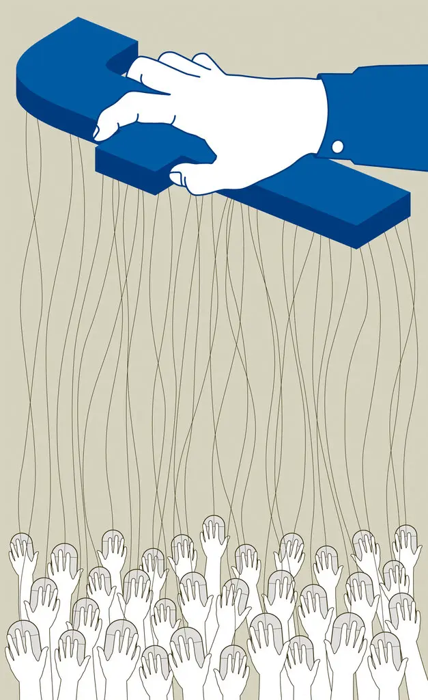

Hva er sosiale medier?
Personvern handler, ifølge Datatilsynets nettsider, om retten til et privatliv og retten til å bestemme over egne personopplysninger. Det kan derfor omhandle alt fra små detaljer om familien din, til større å viktigere ting som kan påvirke livet ditt om det blir snappet opp av feil folk. Derfor er det i Norge og et par andre land et sett med regler for å regulere hvor denne informasjonen kan havne. Ifølge, Kode 1, har du som bruker retten til å velge, vite og ha kontroll om hva som skjer med data som omhandler deg. Derfor skal brukere av datasystem hvem som samler inn dataen, hvor lenge det skal lagres, hva det samles inn for og hva den brukes til.
Hvor annet lovverk ikke er satt på plass for å regulere bruk av brukerdata, kommer personopplysningsloven inn, ifølge Kode 1. Det vil si at helsesektoren ikke påvirkes av denne loven ettersom de har andre regelverk som omhandler dette temaet. De temaene personopplysningsloven dekker er rettighetene til enkeltindivider samt virksomheter og bygges på sju prinsipper listet opp nede.
-
- Varig lagring: Til forskjell fra samtaler mellom personer som møtes fysisk, blir kommunikasjonen i sosiale medier lagret på nettet for all fremtid.
- Søking: Digitale identiteter er søkbare gjennom «søk» i Google eller i sosiale medier.
- Gjenbruk: På nettet kan vi kopiere, manipulere, klippe og lime et budskap på en slik måte at det kan være vanskelig å skille «originalen» fra «kopien».
- Usynlige tilskuere: I det virkelige livet kan vi ha ganske god oversikt over hvem som ser og hører oss. På nettet har vi ingen kontroll med hvem som følger med på hva vi gjør og studerer hvordan vi er.
Når man bruker digitale medier til kommunikasjon er det noen viktige særegenskaper man må huske på. Det er viktig å tenke på noen av disse særtrekkene når man bruker sosiale medier, og disse egenskapene burde endre hvordan man bruker sosiale medier
Hvordan påvirkes virksomhet?
Direktør ved Datatilsynet, Bjørn Erik Thon, mener virksomhetene ikke har god nok kontroll på dataen som sendes inn til Facebooks-nettsider. Han sier «De som ville besøkt Datatilsynets Facebook-side, ville forventet at vi kunne svare på hva opplysningene om deg blir brukt til. Det vet vi ikke», og er kjernen til datatilsynet selv trakk seg fra nettsidene.
Bilde av Bjørn Erik Thon, direktør ved Datatilsynet
Et av hovedpunktene de i tillegg trekker fram er, ifølge kommunikasjonsforeningen, at det ikke er mulig å inngå en egen avtale med Facebook. Deres standardavtale måler seg ikke opp mot personvernforordningen, altså GDPR. Thon trekker seg så litt tilbake ved å si at det er en refleksjonsak og en vurdering alle virksomheter må ta ettersom det ikke er ulovlig å ha en slik side på sosiale medier. Han ender det med å si at han håper offentlige etater en grundig vurdering i lys av denne nye rapporten.
Hvordan påvirkes enkeltindivider?
Problemet med treffer rammer desverre ikke bare virksomheter, men enkelt mennesker også. I det siste tiåret har det vært flere databrudd hos Facebook, hvor skumle persondetaljer som telefonnummer, navn og bosted lekker ut. Ifølge Insider, ble over 530 millioner personer rammet av et slik angrep i 2021. Informasjonen var fra til sammen 106 land og lagt ut gratis på et hacker forum. Problemet med dette er ikke bare at Facebook mista tilliten til amnge av deres brukere, men fikk også hele brukermiljøet til å spekulere om hvor mye informasjon facebook har om oss.
Dette er ikke bare skadelig for tilliten til brukerene, men åpner opp for spørsmålet om hvor mye selskaper som Facebook vet om oss. Oppfinnner av the Center for Humane Technology, Tristan Harris, sa under Netflix-dokumentaren, det sosiale dilemmaet, “Hvis du ikke betaler for produktet, så er du produktet”. Han fortsetter dette med å si at informasjonen om deg som bruker blir solgt til selskaper for å så skreddsy reklame som passer deg best. Noen vil se på dette som positivt ettersom de finner ting de liker, men samtidig sier det noe om det store bilde. Dokumentaren snakker også med andre eksperter og folk som har jobbet hos Facebook. De forklarer hvordan det er mye informasjon man ikke kan tenke seg som havner i hendene på disse tilsynelatende uskyldige mediene